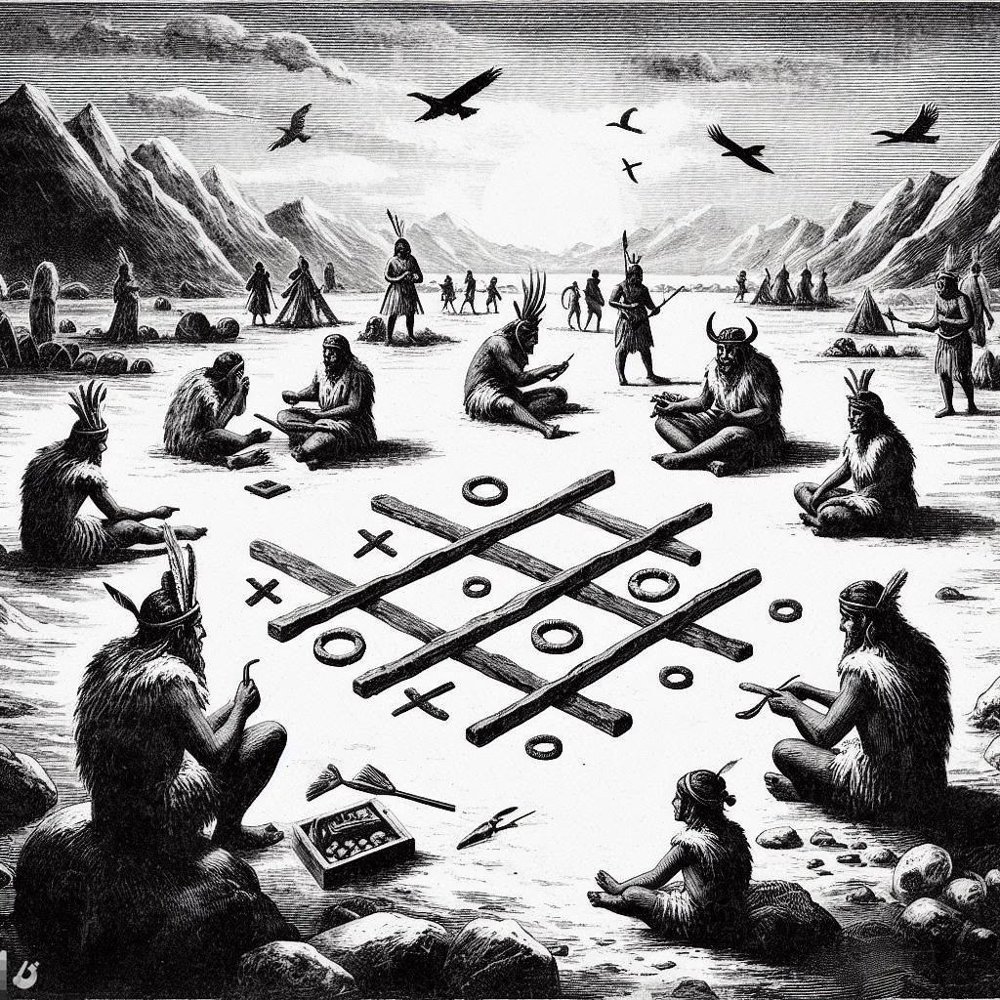

Welcome to the captivating journey through time and strategy ,the History of Tic Tac Toe. Explore the evolution, discover game strategies, play the game, and learn about the rich legacy of this timeless classic.
Welcome to the fascinating journey through the history of Tic Tac Toe. Click the button below to play!
The Evolution of Tic Tac Toe
Explore the journey of how Tic Tac Toe has evolved over the years.
From ancient times to modern digital platforms, the game has stood the test of time.
Tic Tac Toe Timeline
- Prehistoric Era: Evidence suggests that an early form of Tic Tac Toe was played by ancient civilizations. 
- 18th Century: The game gained popularity in Europe and was known by different names.
- 20th Century: Tic Tac Toe became a classic pen-and-paper game played by people of all ages.
References
About Tic Tac Toe
Tic Tac Toe, also known as Noughts and Crosses, is a classic game that has been enjoyed by people of all ages for centuries. It's a simple yet engaging game that transcends cultures and time periods. The basic rules involve players taking turns marking spaces in a 3x3 grid, aiming to form a line of three of their symbols.
Its simplicity and strategic depth have made it a timeless game, played on various mediums ranging from paper and pencil to digital platforms.
Strategies & Tips
- Control the Center: Occupying the center square gives you more opportunities to create winning combinations.
- Block Your Opponent: If your opponent is close to winning, prioritize blocking their moves.
- Create Forks: Try to create situations where you have two potential ways to win, forcing your opponent to make a choice.
- Pay Attention to Opponent's Moves: Anticipate your opponent's strategy and adapt accordingly.
- Stay Flexible: Be ready to change your strategy based on how the game unfolds.
Conclusion
The journey of Tic Tac Toe is not just a historical exploration but a celebration of a game that continues to bring joy and challenge to players worldwide. Whether you're a seasoned strategist or a casual gamer, Tic Tac Toe remains an iconic symbol of entertainment.
Thank you for joining us on this exploration of the history and evolution of Tic Tac Toe. Now, go ahead and enjoy a game yourself!